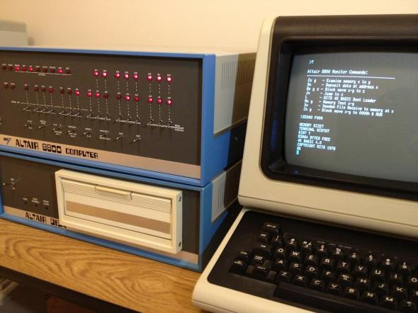
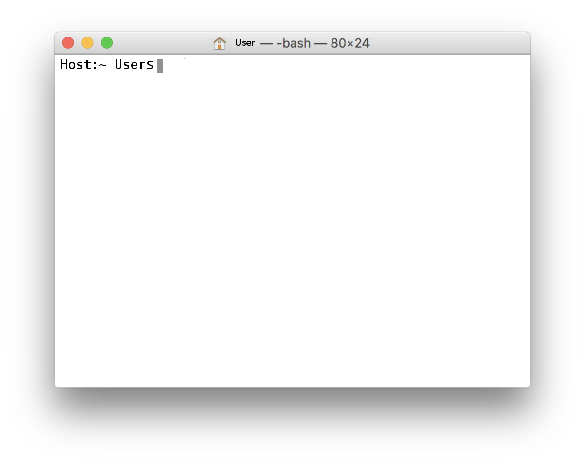

Programming Sesh
Lincoln <lincoln@clarete.li>
Created: 2016-08-30 Tue 17:52
1 Abstraction
noun
- the quality of dealing with ideas rather than events.
- freedom from representational qualities in art.
(Google)
1.1 Abstraction (Software Engineering)
In software engineering and computer science, abstraction is a technique for arranging complexity of computer systems. It works by establishing a level of complexity on which a person interacts with the system, suppressing the more complex details below the current level.
(Wikipedia)
2 Some abstractions
2.1 Terminal
Cool interfaces took a while to come up because cool monitors took a while to come up. Terminals were the main output of computers for a while.

Figure 1: Altair8080 – Awesomest computer around 1974
2.1.1 Terminals are also an abstraction
It used to be slightly less practical to interact with computers.

Figure 2: Eniac – First general purpose computer
2.1.2 Terminal Emulators
Nowadays

Figure 3: Terminal Emulators Nowadays
2.1.3 Shell
Software that receives commands typed on a keyboard, executes them and then prints out the results on a terminal device.
2.2 Some shell commands
- ls: List files in current directory
- pwd: Print out current directory
- cd: Change Directory
- cat: Print out contents of a giv
3 More abstractions
3.1 File System
3.1.1 Directory
- Path
- Files
3.1.2 Root Directory
/
3.1.3 User Directory
~
3.1.4 File
- Path
- Contents
3.1.5 Write Text to Files
- touch
- echo
- >
3.1.6 File Attributes
- Size
- Creation Date
- Owner
- Group
- Permissions
- read
- write
- execute
3.1.7 Configure Permissions
chmod
3.1.8 Content Types
- Extensions
- Magic Number
- #!
4 OMG wait!
4.1 #!
#!/bin/sh
echo "hi"
4.2 chmod
chmod +x prog
ls -l program
./prog
4.3
5 Coding time!
5.0.1 Variables
- =
- echo
5.0.2 Environment Variables
- export
5.0.3 Introduce Logic
- [
- if
- while
- for
6 Next steps